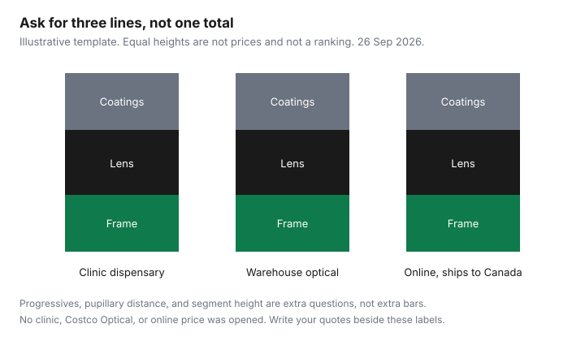

Healthcare · Canada
Glasses Without Overpaying in Canada: Online Retailers vs Costco Optical vs Clinic Frames
A pair of glasses is a stack: frame, lenses, coatings, and sometimes a fitting. A single “$400” or “$80” from a thread is not a quote you can compare, and this draft did not open a dated clinic, warehouse, or online price, so none is printed. The method is to force every channel to price the same prescription the same way. Offer types are disclosed below. There is no ranking of glasses, and no named pair is a pick.
Disclosure: Amazon.ca storefronts and optical-retailer referral links are offer types. Saving Optimizer may earn a commission if a partner link is added later. No partnership is claimed with Amazon, Costco, or any optical retailer. Education only. This page does not rank glasses or name a best online seller.
Key takeaways
- Ask for frame, single-vision or progressive lenses, and coatings as separate lines. A blended total cannot be compared.
- OHIP does not cover eyeglasses. The College of Optometrists says the spectacle prescription is yours at no extra charge, and you choose the dispensary.
- Online dispensing in Ontario has to meet the same standards as in-person dispensing. That includes measurements, verification, and fitting. You may decline a fitting. The registrant decides whether to ship before one.
- No Costco Optical membership rule, warranty, or price was opened. No online remake policy was opened. The comparison table is a template.
- Progressives and high prescriptions are where a wrong pupillary distance or a missing segment height becomes a second purchase.
The real cost stack: frames, lenses, coatings and progressives
Price four decisions, even if the seller prints one number. The frame is the object. The lens is the prescription: single vision, bifocal, or progressive. Coatings are add-ons such as anti-reflective, a blue-light filter, or a photochromic that darkens outdoors. A progressive is not a coating. It is a lens design with a corridor of powers, and it needs a height as well as a pupillary distance. A “package” that folds coatings into the lens hides which line moved when the quote changes.
Write the same prescription on every quote: sphere, cylinder, axis, add power if any, and the date of the exam. A quote that assumes single vision is not a quote for progressives. A quote that assumes a stock lens is not a quote for a high prescription that has to be surfaced. Until those words match, the cheaper total is a different product. The chart later is three equal stacks labelled frame, lens, and coatings. Equal height means “ask for these lines.” It is not a price and not a winner.
Online (Canadian-shipping retailers) vs Costco Optical vs clinic dispensaries
Three channels cover the decision. A clinic dispensary is attached to the exam or sits next door. You try frames, and someone fits them. A warehouse optical counter, including Costco Optical where a warehouse has one, is a high-volume dispensary. An online retailer that ships to a Canadian address builds the glasses from the numbers you send. This page does not name a best site. Amazon.ca storefronts are an offer type in the disclosure, not a recommended listing. If you use a marketplace seller, check who fulfils the order and where a return would go. That is a logistics question, not an optical ranking.
Costco Optical’s membership rule, warranty, and price list were not on a page this draft opened. The membership guide is the warehouse card for merchandise. Do not assume the pharmacy rule, whatever the counter tells you it is, is the optical rule. Ask the optical counter whether a membership is required to buy glasses, what the warranty covers, and whether adjustments are included. Write the answers next to the clinic’s answers. A clinic that includes a year of adjustments is not the same product as a shipped pair with no local fitter, even when the lens numbers match.
Quebec and other provinces licence dispensers under their own statutes. The measurement rules below are Ontario’s, from the College of Opticians and the College of Optometrists. If you live elsewhere, the local college is the standard. Shipping across a provincial border does not turn an Ontario rule into a national one.
Measuring PD and ordering progressives or high prescriptions online without costly remakes
The College of Optometrists practice reference dated 27 June 2026 says you receive the spectacle prescription without asking and without an extra charge, insured exam or not. You may fill it anywhere. The eye-exam guide is who pays for the exam that produces that prescription. Pupillary distance may or may not be on the paper. Ask for it. For progressives, ask for monocular PD, the distance from each pupil to the centre of the nose, and the segment height, which is where the progressive corridor sits in the frame you actually chose. A height measured in a different frame does not travel.
The College of Opticians standards, the file posted with a 12 January 2026 date, say an optician does not dispense eyeglasses except on the prescription of an optometrist or physician. The prescription they rely on includes the prescriber’s name, the patient’s name, the prescription, and the date of the examination. When dispensing, the optician takes appropriate measurements, verifies the finished glasses against the order, and fits and adapts them. The College of Optometrists says online dispensing must meet the same standards as in-person dispensing. Patients may decline an in-person fitting. The registrant uses professional judgement about delivering prescription glasses before that fitting. The last regulated professional who provided the eye-related care is the most responsible dispenser.
A home ruler method was not in those standards, so this page does not teach one. If a website asks you to measure yourself, that number is yours. A remake, if the seller offers one, is the seller’s policy. None was opened for a named retailer on 26 Sep 2026. Before you pay, ask who verifies the finished pair, whether a wrong PD is a free remake, and whether progressives can be returned once worn. High prescriptions and prism are the orders most likely to be wrong when the only input is a single PD typed into a form. Those are the orders to keep local unless the seller is a regulated dispenser who has taken the measurements.
Using vision benefits and claiming receipts
OHIP does not pay for eyeglasses. A workplace vision benefit might, up to a maximum in a benefit period. The period is the fact that makes a December purchase and a January purchase either one claim or two. The employer-benefits guide covers a health spending account. Ask three plan questions before you order online: does the plan reimburse a seller that is not a local optician, does the receipt have to show the prescription details, and do coatings share the frame maximum or sit outside it. Get the answer from the administrator. A forum thread is not the booklet.
If two plans might pay, the coordination guide is the order of claims. Submit the itemized receipt: patient name, date, provider, frame amount, lens amount, coatings, and amount paid. A credit-card slip alone fails most plans. The gap-insurance guide is the separate question of buying a vision rider. Premiums can cost more than the pair. Price the rider against the quote you just split into three lines.
Guide RC4065, opened 26 Sep 2026, lists eyeglasses, contact lenses, and prescription swimming goggles to correct eyesight as eligible medical expenses when prescribed. The 2025 guide says you subtract the lesser of $2,834 or 3 percent of net income on line 23600. Amounts a plan reimbursed are not claimed again. The tax-credit guide is the household list. This is not tax advice, and a later year’s dollar threshold has to be read on the CRA page for that year.
Warranties, adjustments and returns in Canada
A warranty is a contract with the seller, not a Canadian standard this page can quote. Ask, in writing, how long a frame defect is covered, whether a lens scratch is covered, whether adjustments are free and for how long, and whether a return is allowed after the glasses have been worn. Clinic dispensaries often include adjustments because you can walk back in. A shipped pair may require you to mail them, at your cost, to a lab in another province. Costco Optical’s warranty was not opened, so it is not described. An online retailer’s 30-day or 14-day story from a forum is not used.
The questions in the second table are the warranty conversation. Ask them at each channel before you compare totals. A cheaper pair with no local adjustment and a paid remake can cost more than the clinic once, if your prescription is one the lab gets wrong. A simple single-vision pair with a current PD is the order most people can price across channels without that risk. Even then, keep the seller’s return address.
When paying more locally is worth it (children, complex lenses)
Pay for a local fit when the wearer cannot reliably describe what is wrong, when the frame has to survive a child, or when the lens is progressive, high-powered, or prism. The optician standard is a fit and a conversation about adaptation. A child who will not sit for a follow-up measurement is a poor candidate for a mailbox. A first progressive is a poor candidate for a seller who will not check the height in the frame you chose. Local is also worth it when you need a repair this week rather than a shipment.
Pay the lower channel when the prescription is single vision, the PD is written by a dispenser, you have worn that kind of frame before, and the return policy you read covers a wrong size. “Lower” means the lower total of frame plus lens plus coatings plus any shipping and remake fee, not the lower frame price beside a more expensive lens. The template below is where you write those numbers. Leave a cell blank if the seller will not split it. A blank is information.
| Line | Clinic dispensary | Warehouse optical, such as Costco Optical | Online seller that ships to Canada |
|---|---|---|---|
| Frame | |||
| Single-vision lenses | |||
| Progressive lenses, if that is the prescription | |||
| Anti-reflective coating | |||
| Blue-light filter, if you are considering one | |||
| Photochromic lenses, if you are considering them | |||
| Dispensing or adjustment | |||
| Warranty and return, in words |
| Question | Why it changes the price |
|---|---|
| Who is the regulated dispenser, and in which province? | Ontario standards apply to Ontario opticians and optometrists. A box from elsewhere may not include a fitting. |
| Will you use the PD and segment height from my optometrist or optician? | Progressives and high prescriptions fail when those numbers are missing or taken from a different frame. |
| What is free to adjust, and for how long? | A local adjustment can be worth more than a frame discount if you cannot wear the pair. |
| What is the remake and return rule after the glasses are worn? | A no-return policy makes a wrong PD your loss. This page did not open a named seller’s window. |
| Is a membership required? | Ask at the optical counter. It was not printed on a Costco Optical page opened for this draft. |

Sources & date stamps
- Ontario, what OHIP covers, updated 22 April 2026: eyeglasses and contact lenses are not covered. College of Optometrists funding guide, opened 26 Sep 2026.
- College of Optometrists of Ontario, optometric practice reference dated 27 June 2026. Prescription provided without request and without extra charge. Online dispensing must meet in-person standards. Patients may decline a fitting.
- College of Opticians of Ontario, standards of practice file dated 12 January 2026. Prescription contents, measurements, verification, and fitting.
- CRA guide RC4065 (2025), opened 26 Sep 2026. Prescribed eyeglasses and contact lenses; threshold the lesser of $2,834 or 3 percent of line 23600.
- Dropped: every dollar price, Costco Optical’s membership and warranty wording, and every online remake window. None of those pages was opened with a figure this draft could date.
Frequently asked questions
Are online glasses as good as clinic glasses?
This page does not rank them. The College of Optometrists of Ontario says dispensing online has to meet the same professional standards as dispensing in person, and that you may fill a prescription at the dispensary you choose, while a clinic still fits and adjusts the frame on your face. An online order depends on the measurements and the maker’s remake policy, which this draft did not open for any named store. If the prescription is complex, or the wearer is a child, start with a local dispenser.
How do I measure my PD at home?
Pupillary distance is the measurement a dispenser uses to centre the lenses. The college standards opened on 26 Sep 2026 say the dispensing professional takes the measurements the glasses need, and they do not publish a home-ruler method, so this page does not teach one. Ask the optometrist or optician for binocular PD and, for progressives, monocular PD and segment height, in writing. A number you guess is a remake risk you would pay for.
Can I buy progressives online?
You can order them only if the seller will make them to a valid prescription and to the measurements progressives need, including segment height. The College of Opticians expects an optician to take appropriate measurements, verify the finished glasses, and fit them, and ordering progressives from a single PD and no height is how a pair comes back wrong. Read the remake and return terms before you pay. No retailer’s remake window was opened for this draft.
Will my vision benefits reimburse online purchases?
That is a booklet rule, not an Ontario law this page can state. Ask the plan whether a receipt from an online seller is accepted, whether the seller must be a Canadian optician, and whether coatings and progressives count toward the same maximum as the frame. A health spending account follows the account’s own list, so keep an itemized receipt. The employer-benefits guide is the account, and this page is the shopping stack.
What if the glasses are wrong?
Contact the seller before you wear a bad pair into a second problem. A regulated dispenser in Ontario is expected to verify that finished glasses match the order and to fit them; you may decline an in-person fitting, and the registrant uses professional judgement about sending glasses before that fitting. If the error is the prescription itself, go back to the prescriber rather than remaking the same numbers. Warranties differ by channel, so get the warranty in writing at purchase, because no national warranty was opened here.